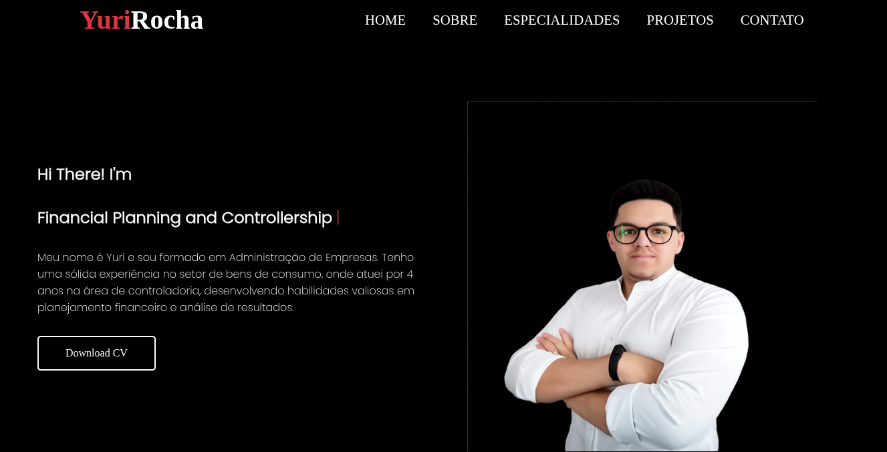
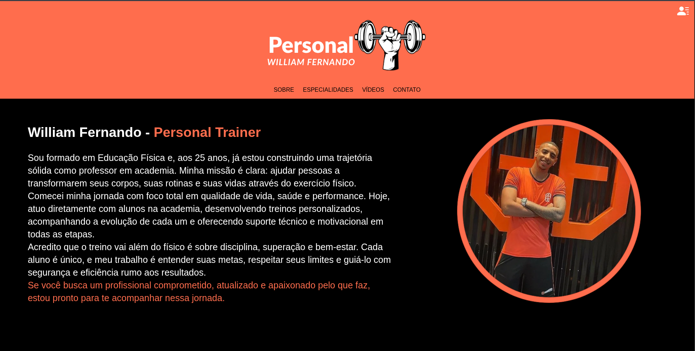
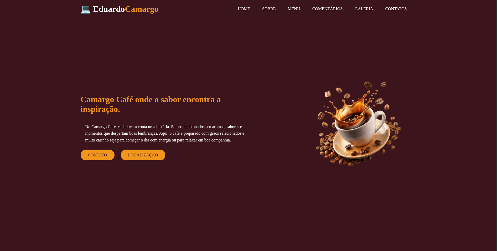
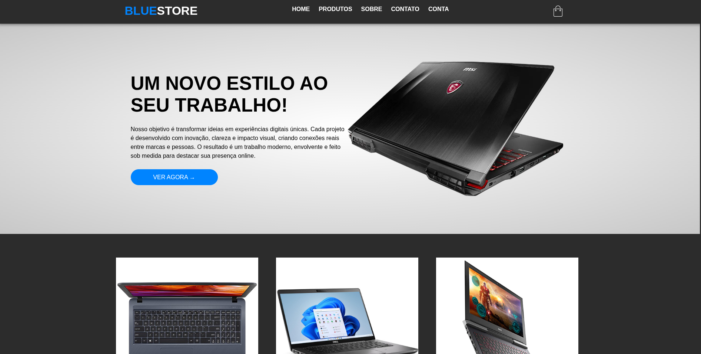
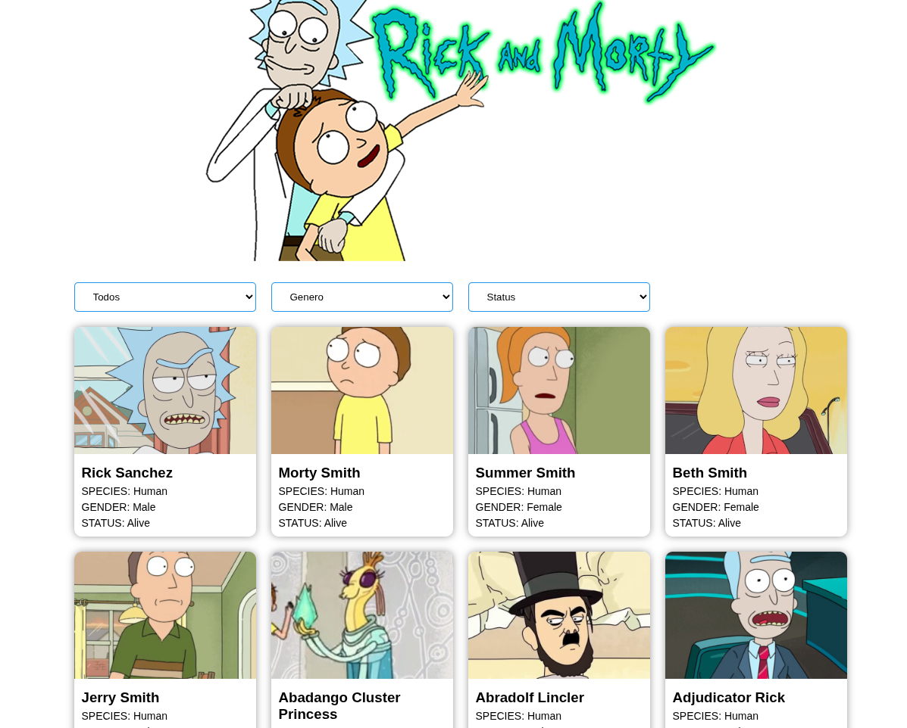
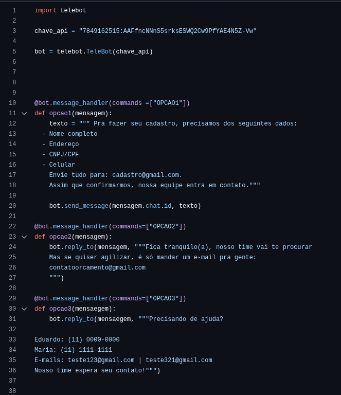
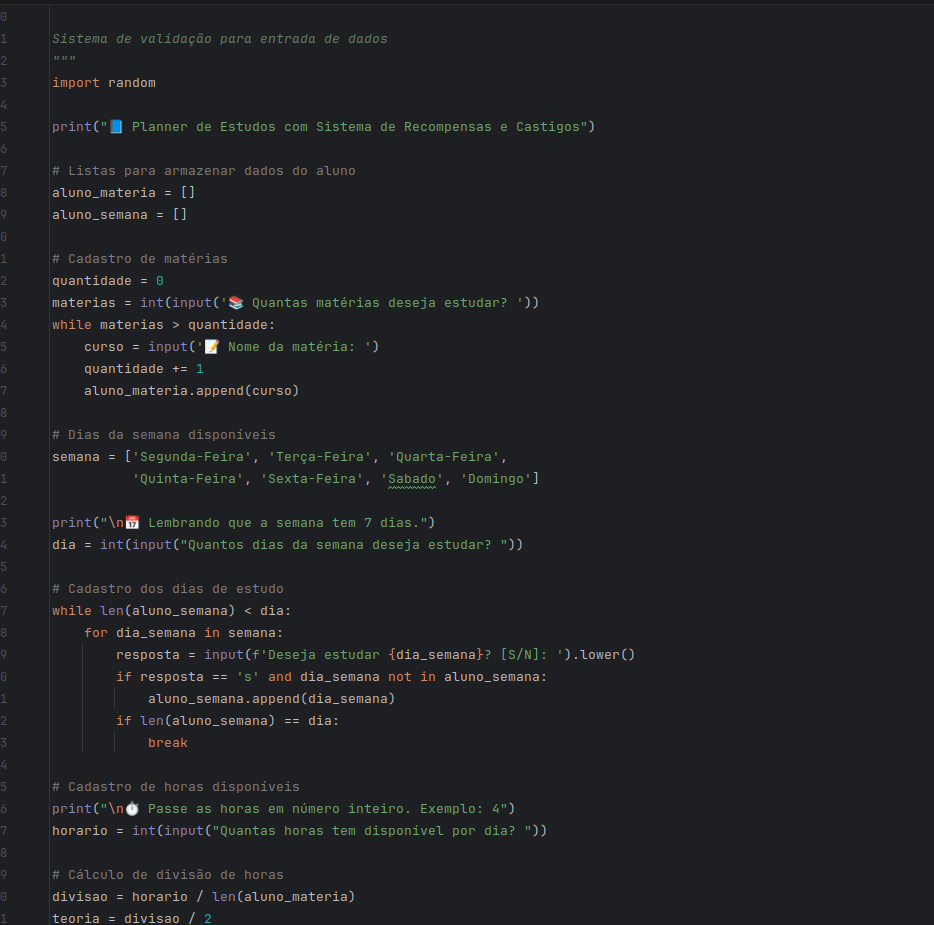

EDUARDO CAMARGO PAULINO.
HTML | CSS3 | JavaScript | Python | PHP | Segurança da Informação | Formado em Análise e Desenvolvimento de Sistemas 25 de Setembro de 2025, dedico meus estudos ao aprimoramento contínuo em desenvolvimento de software, com ênfase em Front-end e programação com Python. Tenho investido em cursos complementares voltados a tecnologias como HTML, CSS, JavaScript, MySQL e Linux, além de fundamentos em segurança da informação e boas práticas com Git/GitHub. Meu principal objetivo é atuar como desenvolvedor, aplicando meus conhecimentos em projetos reais, evoluindo tecnicamente e contribuindo ativamente para equipes colaborativas e inovadoras. Sou uma pessoa dedicada, curiosa e comprometida com a qualidade daquilo que me proponho a fazer. Gosto de transformar desafios em aprendizado e acredito no poder do conhecimento compartilhado para construir soluções eficientes.

MINHAS ESPECIALIDADES.
Linguagem Python
Estudando Python em ambiente Linux para aprimorar conhecimento em ambos.
Estruturas de repetição (for, while)
Tratamento de erros (try/except)
Automação de tarefas
Uso de Jupyter Notebook
HTML, CSS, JavaScript
Estruturação de páginas com HTML
Estilização responsiva com CSS
Interatividade e lógica com JavaScript
Conhecimento em boas práticas de desenvolvimento web
Segurança da Informação
Curso voltado para Segurança da Informação
Foco em testes de invasão (Pentest)
Conhecimento em técnicas de ataque e defesa
Práticas de ethical hacking para identificar vulnerabilidades
Noções de análise de riscos e proteção de sistemas

MUITO PRAZER, SOU EDUARDO CAMARGO
Meu nome é Eduardo Camargo Paulino, tenho 29 anos e sou natural de Taboão da Serra, São Paulo. Minha trajetória começou no mercado financeiro, onde atuei por cerca de quatro anos em análise estratégica e tomada de decisões. Essa experiência me ensinou a pensar com lógica, trabalhar sob pressão e lidar com riscos de forma estruturada — competências que hoje aplico no universo da tecnologia.
Há três anos, transformei minha curiosidade em profissão. Iniciei explorando Python, aprofundei meus estudos em segurança da informação com foco em pentesting, e desenvolvi habilidades em front-end. Construí uma base sólida em HTML, CSS, JavaScript, Linux, MySQL e boas práticas de versionamento com Git/GitHub. Essa base evoluiu para projetos práticos que unem tecnologia, inovação e colaboração.
Atualmente, estou no quinto semestre da graduação em Análise e Desenvolvimento de Sistemas, com foco em desenvolvimento de software — especialmente front-end e programação em Python. Sou movido pelo aprendizado contínuo e reforço meus conhecimentos com cursos complementares e experiências práticas.
Curioso, dedicado e comprometido com qualidade, encaro desafios como oportunidades e acredito na força das ideias. Vejo a tecnologia como uma ponte entre estratégia e inovação. Para mim, cada projeto é como montar um grande quebra-cabeça — e quero estar entre aqueles que ajudam a conectar as peças.
Domínio em tecnologias e práticas:
🐍 Python para automações, scripts e APIs
🌐 HTML, CSS, JavaScript no desenvolvimento de interfaces
🐘 PHP para aplicações web dinâmicas e integração com bancos de dados
🐧 Linux no dia a dia de desenvolvimento e servidores
🔄 Git/GitHub com boas práticas de versionamento e colaboração
📊 Observabilidade com Grafana para monitoramento e análise de métricas
🛡️ Estudos em segurança da informação, com foco em pentesting
PROJETOS front-end Online

Projeto Portfólio Yuri Rocha
Site criado para apresentação profissional de portfólio. Desenvolvido com HTML, CSS e JavaScript, destaca projetos e informações de forma responsiva e moderna.

Projeto Portfólio Personal Trainer
Site desenvolvido para apresentar o trabalho de um personal trainer, com foco em design limpo e responsivo. Criado em HTML, CSS e JavaScript, destaca serviços, contato e estilo profissional de forma moderna e acessível.
PROJETOS front-end no GitHub

Projeto Coffee
Site responsivo desenvolvido como vitrine de aprendizado para uma lanchonete. Construído com HTML, CSS e JavaScript, apresenta cardápio, galeria de pratos, comentários de clientes e navegação adaptada para mobile, com interatividade via carrosséis e efeitos visuais modernos..

Projeto E-commerce Estudo
Site responsivo de e-commerce criado como prática de aprendizado. Desenvolvido com HTML, CSS e JavaScript, apresenta menu de navegação intuitivo, listagem de produtos com imagens e preços, seção de comentários de clientes e footer informativo, tudo adaptado para desktop, tablet e mobile.

Projeto API JavaScript
Aplicação acadêmica criada para consumir a API pública de Rick and Morty. Desenvolvida com HTML, CSS e JavaScript, lista personagens da série com imagem, nome e atributos, além de filtros dinâmicos por espécie, gênero e status. O projeto demonstra integração de API, manipulação de dados dinâmicos e interface responsiva adaptada para diferentes dispositivos.
PROJETOS Python

Projeto Automação
Script em Python criado para automatizar tarefas repetitivas. Utiliza bibliotecas da linguagem para executar processos de forma rápida e eficiente, demonstrando aplicação prática de automação e manipulação de dados em ambiente de estudo.

Estudos com Sistema de Recompensa e Castigos
Exercício acadêmico em Python que simula um sistema simples de cadastro e controle. Desenvolvido para treinar lógica de programação, estruturas condicionais e manipulação de dados, servindo como base para futuros projetos mais complexos.